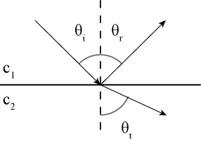
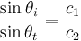
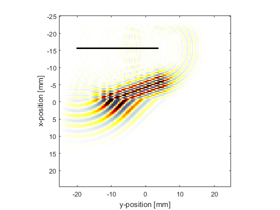
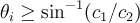
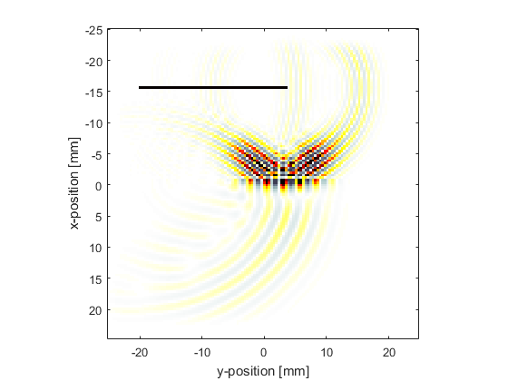

Snell's Law And Critical Angle Reflection Example
This example illustrates Snell's law by steering a tone burst from a linear array transducer within a layered heterogeneous medium. It builds on the Simulating Transducer Field Patterns Example.
Contents
Snell's law
It is well known that when a plane wave interacts with a planar interface, the reflected and transmitted waves will obey Snell's law.
The angle of the incident and reflected waves will be identical, and the angle of the transmitted wave will vary according to
.
This is simulated here by steering a tone burst from a linear transducer onto a layered medium heterogeneity. For c1 = 1500 m/s, c2 = 3000 m/s, and an incidence angle of 20 degrees, the transmission angle will be 43 degrees.
Critical Angle Reflection
When the incidence angle exceeds

the incident wave will be completely reflected. For the parameters used here, this corresponds to 30 degrees. The interaction of the plane wave with the interface for a incidence angle of 35 degrees is shown below. An evanescent wave component that decays quickly further from the interface is visible, but the planar component of the incident wave has been completely reflected.
